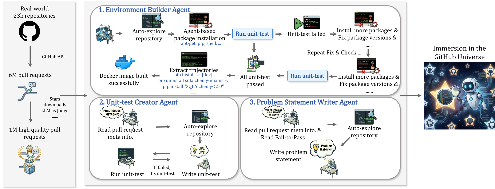
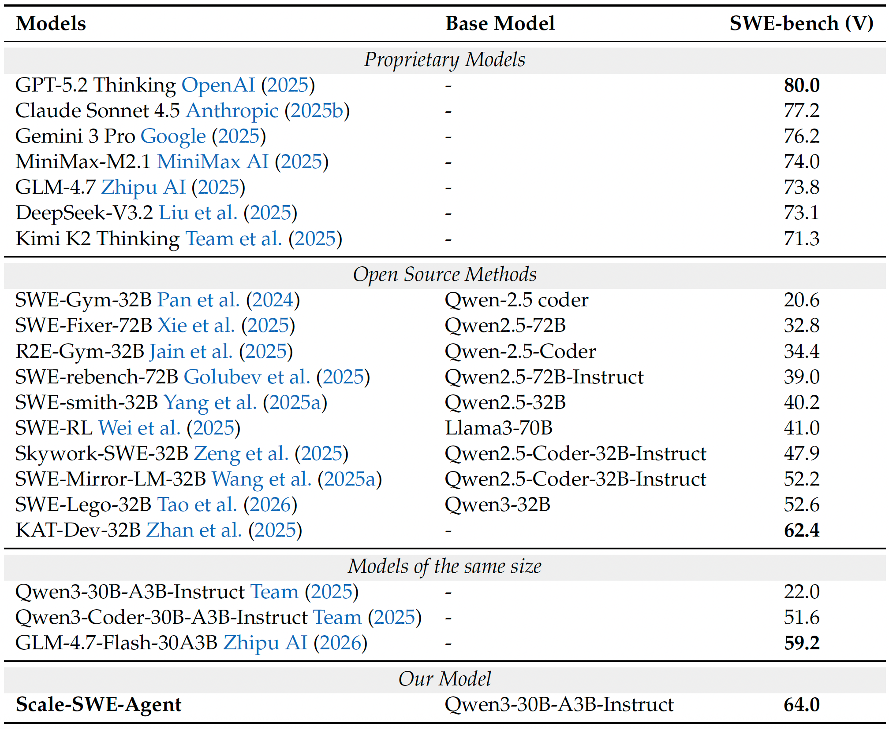
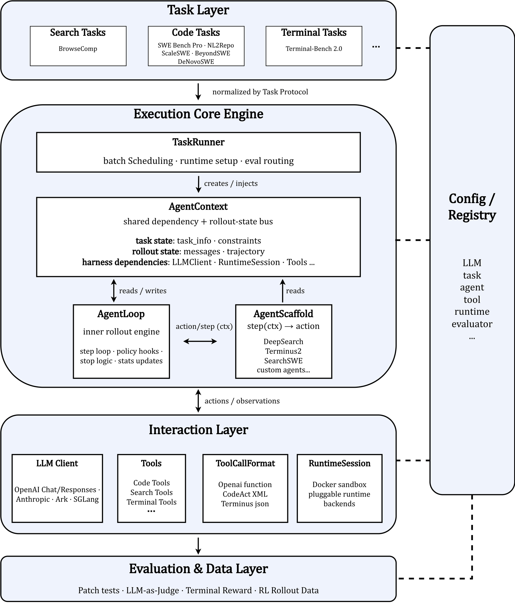

00全景与读法
ScaleSWE 要回答的核心问题是：SWE 智能体训练里最稀缺的资源从来不是算力，而是"既真实、又可大规模获取"的任务。人工标注（如 SWE-bench）真实但量极小；纯合成（注入 bug、反向翻译）量大但分布失真。ScaleSWE 的核心判断是高保真真实数据 > 海量合成数据，并用一整条工程化流水线将这一判断落地。方法论拆成三个递进部件，每一件解决数据流水线里的一个具体瓶颈：(1) 真实 PR 的大规模挖掘解决"真实性 vs 规模"的矛盾；(2) 合成 F2P 解决"真实 PR 缺测试"导致的可验证性缺口；(3) 蒸馏 → SFT 解决"将数据转化为能力"的最终环节。
每一节固定三段：朴素基线（左栏，灰：不看论文时的直觉实现）/ ScaleSWE 的做法（右栏，橙）/ 差在哪（下方色块：差异、原文是否给了理由、对 RL-on-NPU 的含义）。数字按来源标注：自报 论文或仓库口径、第三方 经公开来源核对的对比数字、推断 本站分析。原文标 provisional 的 ScaleSWE 内部数字（100k / 20k / 71,498 / 3.5B / 64% / 5,200 repos 等）全部保留限定语。
贯穿全文的一条线索：可执行环境既是数据生产的过滤器，又是质量判定标准。漏斗的每一级、合成 F2P 的门控、蒸馏的拒绝采样，都以"能不能在沙箱里跑出确定的通过 / 失败"为唯一判据——这也是它与 RL（同样以执行为 verifier）天然衔接的原因。
01项目定位：不是 Scale AI，不是 benchmark
ScaleSWE 容易被两个同名物误读：它不是 Scale AI（仅为同名），也不是一个评测基准。它是一个 SWE 训练数据 + 智能体项目，出自 AweAI-Team，论文为 Immersion in the GitHub Universe: Scaling Coding Agents to Mastery（arXiv 2602.09892）。早前看板曾把它与 Scale AI 的 SWE-bench Pro 混淆，现已订正：本文讨论的 ScaleSWE 既不是一家公司，也不是一个评测基准，而是"数据 + 智能体"项目，核心贡献在"数据 / 蒸馏"这一侧。
朴素基线
看到"Scale"与"SWE"两个词，把它归入 Scale AI 的 SEAL 评测系列（SWE-bench Pro / Atlas），当作一个更难的榜单来读；或者当作又一个合成任务数据集，与 SWE-smith 同类。
ScaleSWE 的做法
自报 项目定位是训练数据 + 智能体，产出物是可执行实例、蒸馏轨迹、scaffold 与学生模型；评测用的是既有的 SWE-bench Verified，自身不提供基准。核心主张是"高保真真实数据 > 海量合成数据"，与 SWE-smith 的合成路线在方法论上对立而非同类。
差在哪定位错误会导致两类误读：把 64.0% 当作某个新榜单上的分数（它是 Verified 上的分数），或把它与 SWE-smith 当作可互换的数据源（两者对"任务从哪里来"的回答相反）。原文用一段订正说明专门处理这一点；D12 中同样的更正已经出现过。
02数据漏斗：从 23k 仓库到 10 万实例
ScaleSWE 直接从 23,000+ 仓库 / 6M+ PR 起步，做漏斗式筛选，最终收敛到 10 万验证实例（provisional）、来自最终 5,200 个仓库（provisional）。这条漏斗有两处关键取舍。
预筛只看元数据、不跑代码。预过滤阶段的 LLM-as-a-judge 只读 PR 元数据（git diff + PR 描述 + merge-commit 信息），目的是把百万级筛选的成本压到"读 diff + 描述"这种轻量判断上——执行验证成本过高，无法覆盖全部 6M PR。这一步把 6M+ PR 收敛到约 1M 候选。
把昂贵的"可执行化"推迟到只剩约 1M 候选时才做。成本最高的环境构建只在候选池上跑，由三智能体流水线承担。

这张图怎么读
看两级收敛的比例与成本：第一级 6M → 约 1M 是六倍收敛，成本是读文本；第二级约 1M → 10 万是十倍收敛，成本是建环境、跑测试。两级的顺序不能交换——先做便宜的六倍收敛，昂贵的十倍收敛才只需覆盖 1M 而不是 6M。
末端"5,200 repo"与起点"23,000+ 仓库"的对照说明最终只有不到四分之一的仓库贡献了可验证实例（推断）——可执行化的瓶颈落在仓库层面（能否装环境），而不只是 PR 层面。
朴素基线
对每个抓到的 PR 直接尝试构建环境并跑测试，用执行结果决定去留；或者反过来，只在少数精选仓库上人工配环境（SWE-Gym 式），以规模换真实。
ScaleSWE 的做法
自报 两级漏斗：先用只读元数据的 LLM-as-judge 把 6M+ 压到约 1M，再把可执行化限定在候选池上。原文给出的理由是执行验证成本过高、无法覆盖全部 6M PR。最终 10 万实例 / 5,200 仓库（prov.）。
差在哪差别在把成本最高的步骤放在漏斗最窄处。原文给了理由（执行成本不可覆盖 6M），但未给预过滤的召回率——被元数据判断错杀的可验证 PR 有多少，无法从公开材料判断。对 RL-on-NPU 的含义：数据漏斗是 CPU / 容器负载，与训练算力解耦，规模化的门槛在编排系统（第 03 节）而非加速器。
03三智能体沙箱流水线与 MEGAFLOW
三智能体沙箱流水线是把"百万次真实环境构建"工程化的核心。每个阶段一个专职 agent，因为这三件事的失败模式互不相同（环境装不上 ≠ 测试写不出 ≠ issue 描述不清），分离后便于定位与重试。三个 agent 依次是 (1) 环境构建、(2) 单测创建（unit-test-creator）、(3) 问题陈述合成。
整条流水线由 MEGAFLOW（分布式长程 agentic 作业系统）编排：每个构建派发到独立的 Aliyun ECS 实例，在沙箱 VM 里跑完整 build，产出验证过的 Docker 镜像后推到 Aliyun ACR，借 Docker 层缓存共享基础层来压缩存储。没有这套分布式编排，"百万次真实环境构建"在工程上不可行。

这张图怎么读
最值得看的是环境构建 agent 内部的闭环结构：安装包 → 跑单测 → 失败 → 补装包与修版本 → 再跑单测，图上标注"Repeat Fix & Check ...."，直到"All unit-test passed"才走向"Extract trajectories → Docker image built"。图中给出的轨迹示例是具体的 shell 命令（pip install -e .[dev]、pip uninstall sqlalchemy-mixins -y、pip install "SQLAlchemy<2.0"）——环境构建本身是一个 agent 任务，其产出的不只是镜像，还有可复现的安装轨迹。
三个 agent 之间的依赖是单向的：单测创建 agent 的输入是 PR 元信息，问题陈述 agent 的输入是"PR 元信息 + Fail-to-Pass"——即问题陈述在测试确定之后才写，保证 issue 描述与 F2P 一致。图中单测创建 agent 也有自己的"If failed, fix unit-test"闭环，对应第 04 节"合成 F2P"的质量门控。原文提到的 MEGAFLOW、Aliyun ECS / ACR 不在此图中，见图 3。

这张图怎么读
与图 2 互补：图 2 画的是每个 agent 内部做什么，这张图画的是调度与存储。虚线"派发每个 build"表示 MEGAFLOW 与 agent 之间是作业级关系——每个 PR 的构建是一个独立长程作业，在独立 ECS 上隔离运行，失败不影响其他作业。
末端"共享基础层缓存"是存储侧的关键：10 万个镜像若各自独立会不可承受，Docker 层缓存让同一仓库的不同 PR 共享基础层。原文没有给出镜像总存储量或缓存命中率。
朴素基线
用一个通用 agent 对每个 PR 端到端完成"装环境、写测试、写 issue"，失败就整体重试；在单机或少量机器上串行执行。
ScaleSWE 的做法
自报 三个专职 agent 按失败模式分离（环境装不上 ≠ 测试写不出 ≠ issue 描述不清），便于定位与重试；MEGAFLOW 把每个 build 派发到独立 Aliyun ECS，沙箱 VM 内完整 build，镜像推 ACR 并共享基础层。
差在哪差别在按失败模式拆分 + 作业级分布式编排。原文给出了拆分理由（失败模式互不相同），但未给三个阶段各自的通过率、单次 build 的平均耗时与成本，复现时需自行测量。对 RL-on-NPU 的含义：这套编排与 D12 讨论的"沙箱是主导成本"同源——环境构建与 rollout 沙箱共用同一类基础设施，先建这一层再谈训练。
04合成 F2P：只恢复可执行性，不伪造任务
大量真实 PR 修了 bug 却没有附带可执行的复现测试。没有 F2P（Fail-to-Pass）测试，就无法用 SWE-bench 语义自动判定补丁是否正确，这些 PR 会成为"不可验证"的无效数据。ScaleSWE 用单测创建 agent，在 PR 缺测试时合成可执行的 F2P 复现测试——但只是"恢复可执行性"，issue 本身仍是真实 PR，任务并未被捏造。
验证沿用 SWE-bench 语义：
- F2P：打金标补丁前失败、打补丁后通过；
- P2P（Pass-to-Pass）：前后都通过（回归保护）；
- 执行顺序固定，防止测试污染（test pollution）。

这张图怎么读
关键在两条路径汇合到同一验证节点：合成测试与作者测试接受相同的 F2P / P2P 判定，合成的测试不享受更宽松的标准。"固定执行顺序"只出现在合成分支上，因为合成测试的顺序依赖没有作者保证。
菱形之前的"真实 PR"节点是本节的论点所在：分支只决定测试从哪来，不改变 PR 与 issue 的来源。对比 SWE-smith 的流程（先有 repo，再注入 bug 造出任务），那里的"任务"节点本身是生成的。
朴素基线
丢弃没有测试的 PR（只留自带 F2P 的，规模大幅缩水）；或者反过来，为了规模直接向代码注入 bug 造任务（SWE-smith）、从代码反向翻译出任务（R2E-Gym）。
ScaleSWE 的做法
自报 缺测时由 unit-test-creator 合成可执行的 F2P 复现测试，issue 与修复保持真实；验证沿用 SWE-bench 的 F2P / P2P 语义并固定执行顺序防 test pollution。这是它与两类纯合成路线的本质区别：只在测试缺失时恢复任务的可执行性，不编造任务。
差在哪差别在合成的对象是测试而不是任务。这是"高保真真实数据 > 海量合成数据"论点的技术基础。原文未给出合成 F2P 在 10 万实例中的占比，也未给出合成测试与作者测试在训练效果上的分别消融——这是复现时最值得补的实验。对 RL 的含义：合成 F2P 的质量直接决定 RL 奖励的标签噪声（D12 的 flaky 测试问题），固定执行顺序是必要而非充分的防线。
05蒸馏 → SFT：把数据变成能力
有了 10 万级可执行实例后，ScaleSWE 用纯蒸馏 + SFT（本论文不含 RL，RL 在后续 DeNovoSWE）把数据转成一个真正能解题的学生模型。
机制上，教师 DeepSeek-V3.2 在 25k 实例上每题采样 5 次（temperature 0.95，每条轨迹 ≤100 轮），再做结果级拒绝采样——只保留最终提交通过全部测试的轨迹。这是一个零额外标注成本的质量门控：只有真正解出题的轨迹才进训练集，无需过程标注。可执行环境在此既是数据生产的过滤器，又是质量判定标准。

这张图怎么读
算一下采样与产出的比值：25k 实例 × 5 次采样 = 125k 条候选轨迹，拒绝采样后留下 71,498 条——约 57% 的教师轨迹通过了全部测试（推断，按原文数字计算）。这个比例说明教师在这批实例上的成功率相当高，也说明 25k 实例是从 10 万中挑出的子集，挑选标准原文未给。
第二个看点是"只留通过全测"节点：它与第 04 节的 F2P / P2P 验证是同一个判据。可执行环境在这里第二次被使用——第一次是过滤数据（第 02–04 节），第二次是过滤轨迹。
| 维度 | 取值 |
|---|---|
| 教师模型 | DeepSeek-V3.2 |
| 采集实例数 | 25,000 |
| 每题采样数 | 5 |
| 采样温度 | 0.95 |
| 每条轨迹最大轮数 | ≤ 100 turns |
| 过滤方式 | 结果级拒绝采样（仅保留最终提交通过全部测试者） |
| 产出轨迹 | 71,498 条（prov.） |
| 产出 token 量 | 约 3.5B tokens（prov.） |
| 学生模型 | Qwen3-30B-A3B-Instruct |
| 训练方式 | SFT only（无 RL） |
| SWE-bench Verified（蒸馏后） | 64.0%（prov.） |
| SWE-bench Verified（基座） | 22.0%（经核对，基座 Qwen3-30B-A3B 约 22.0%） |
| 提升 | +42 个百分点 |
| 对照 | 超过当时开源 SOTA KAT-Dev-32B（62.4%，经核对） |
| 消融 | 同样的蒸馏 + SFT 流程换到 SWE-Gym / SWE-smith 数据上更差 → 支持"真实高保真 > 海量合成" |
朴素基线
SFT 只能做冷启动，要拿到高分必须上 RL；蒸馏数据越多越好，不做过滤；或者用过程标注 / LLM 评分挑选轨迹。
ScaleSWE 的做法
自报 SFT only 即达 64.0%（prov.），超过开源 SOTA KAT-Dev-32B 62.4%（第三方 经核对）；过滤只用结果级拒绝采样（通过全部测试），零额外标注成本；消融显示同一流程换到 SWE-Gym / SWE-smith 数据上更差。
差在哪差别有两处：用执行结果做轨迹门控而非过程标注，以及不做 RL 也能拿到当时开源最高分。消融是这一节的论证支柱，但原文只转述了结论（"更差"），未给具体数字与数据量是否对齐（同样 71k 条还是同样实例数）。对 RL-on-NPU 的含义见第 10 节：这 71k 条全部通过测试的轨迹是现成的冷启动语料。
06结果表：64.0% 的三条参照线
64.0% 这个头条数需要放在三条参照线上读：教师（DeepSeek-V3.2）、同期开源方法（KAT-Dev-32B 62.4%）、同规模基座的不同版本（Qwen3-30B-A3B 的 Instruct 版约 22.0%）。原文核对了其中三个数字——基座 22.0%、KAT-Dev-32B 62.4%、蒸馏后 64.0%——其余对照行来自论文结果表，本站未逐一核对。

这张图怎么读
这张表有三条不同的参照线，读法各异。第一条是教师：DeepSeek-V3.2 在 Proprietary 组为 73.1，学生 64.0 与教师差 9.1 分——蒸馏 SFT 的上限被教师锁定，这是原文"学的是教师行为分布、难超教师"的数字表现（推断）。第二条是开源方法组的 Base Model 列：多数为 Qwen2.5 系 32B 或 72B，Scale-SWE-Agent 的基座是 30B-A3B（激活 3B 的 MoE），参数口径不同，62.4 → 64.0 的超越是跨基座的。
第三条最值得注意："Models of the same size"组把同规模基座的三个版本排在一起：Instruct 22.0、Coder 51.6、GLM-4.7-Flash 59.2。ScaleSWE 从 22.0 起步而不是从 51.6 起步，+42 分是相对未经代码专项训练的 Instruct 版本；若与 Coder 版本比，增量为 12.4 分。原文只核对了 22.0、62.4、64.0 三个数字，表中其余行为论文自报，本站未逐一核对。注意表中 SWE-RL 41.0 与本文第 08 节的 Meta SWE-RL 41.0 一致。
朴素基线
把 64.0% 与闭源组最高的 80.0 相减，得出"开源落后 16 分"；或者把 +42 分当作蒸馏方法本身的增益，与其他方法的增量直接比较。
ScaleSWE 的做法 / 原文的处理
自报 论文把对照分成四组，把"同规模模型"单列一组，并以 Instruct 版 22.0 为基座起点。第三方 原文只对基座 22.0、KAT-Dev-32B 62.4、蒸馏后 64.0 做了公开来源核对，其余行保留论文口径。
差在哪差别在增量的起点选择：+42 分相对的是未经代码专项训练的 Instruct 基座，若以同规模 Coder 版为起点增量会小得多（推断，按表中数字计算）。这不否定 64.0% 的价值——它仍是当时开源最高、且高于同规模 GLM-4.7-Flash——但说明"数据教会了模型什么"的量化需要控制基座起点。教师 73.1 与学生 64.0 的 9.1 分差距，是蒸馏 SFT 路线在本文范围内可观察到的上限。
07发布物与复现路径
ScaleSWE 的发布物有两部分数据与一套工具：20k "Real-Executable" 实例（Scale-SWE）、71,498 条蒸馏轨迹（Scale-SWE-Distilled），以及 scaffold AweAgent（Apache-2.0）与 HuggingFace 模型 Scale-SWE-Agent。10 万验证实例是流水线的总产出，20k 是其中开源的可执行子集；论文与 HuggingFace 页面在原文撰写时被 403 拦截，因此发布物的具体字段与许可以官方页面为准。
朴素基线
复现 64.0% 需要从 6M PR 起重跑整条漏斗与三智能体流水线，即重建 MEGAFLOW 级别的分布式编排。
ScaleSWE 的做法
自报 复现 SFT 段只需 71,498 条已过滤轨迹 + AweAgent 的训练模式（token 级轨迹、loss_mask=0）；复现数据段可从 20k Real-Executable 实例起步，无需重跑漏斗。流水线本身（MEGAFLOW、ECS / ACR）是否开源原文未说明。
差在哪差别在复现 SFT 与复现数据生产是两个难度量级：前者是标准 SFT 负载，后者需要作业级分布式编排。对 RL-on-NPU 的直接含义是第 10 节的第三点——先复现 SFT 段，这是对训练栈成熟度要求最低的部分；20k 可执行实例则可作为 RL 环境的起始池（推断）。
08横向对比
下表把 ScaleSWE 放进 SWE 训练数据 / RL 生态里横向对照。标 (prov.) 的是 ScaleSWE 内部数字（源于受限的论文 / HF 访问，待全文确认）；对比项的对外数字均已用公开来源核对。
| 项目 | 组织 | 任务来源 | 合成 / 恢复方式 | 训练法 | 可执行环境 | Verified 头条 |
|---|---|---|---|---|---|---|
| ScaleSWE / Scale-SWE | AweAI-Team | 真实 GitHub PR（23k repos / 6M PR 漏斗） | 只恢复可执行性：缺测试时合成 F2P，不造任务 | 蒸馏 + SFT only | 是，Docker（MEGAFLOW / Aliyun ECS + ACR） | 64.0%（基座 22.0%）(prov.) |
| SWE-smith | Princeton / SWE-bench 团队 | 合成 bug 注入 | 注入合成缺陷 | 数据集（供 SFT / RL） | 是，容器化 | 取决于使用方 |
| SWE-Gym | 学界 | 真实 GitHub issue，人配环境 | 真实环境，无大规模合成 | 训练环境（SFT / RL） | 是 | 取决于使用方 |
| R2E-Gym | 学界 | 代码反向翻译出任务 | back-translation 合成任务 | RL 环境 | 是 | DeepSWE 的 RL 数据源 |
| DeepSWE | Together AI + Agentica | R2E-Gym 4,500 真实任务 | 用 R2E-Gym | 纯 RL（GRPO++） on Qwen3-32B | 是 | 42.2% Pass@1 / 59% w/ TTS（经核对） |
| Meta SWE-RL | Meta | 开源软件演化（PR / issue 全生命周期） | 规则奖励（与金标相似度），非执行 | 纯 RL（GRPO） on Llama3-70B | 否，规则奖励为主 | 41.0%（Llama3-SWE-RL-70B，经核对） |
| SWE-bench（Verified） | Princeton / Stanford | 真实 GitHub issue，人工核验 | 无（是评测） | —（基准） | 是 | 是"头条"本身的标尺 |
朴素基线
把 64.0、42.2、41.0 排成一列，得出"SFT 优于 RL"的结论；或者反过来，认为 RL 路线代表上限、SFT 只是权宜。
ScaleSWE 的做法 / 原文的处理
第三方 ScaleSWE 是唯一"真实任务 + 只恢复可执行性 + 纯蒸馏 SFT"的组合：真实性轴上比 SWE-smith / R2E-Gym 更靠右，训练成本轴上比 DeepSWE / Meta SWE-RL 更轻。64.0% 高于同期纯 RL 路线（DeepSWE 42.2% Pass@1、加 TTS 到 59%；Meta SWE-RL-70B 41.0%），用更小的 30B-A3B 学生 + 纯 SFT 即超过它们；原文明确这是不同评测设定下的并列，需谨慎类比。
差在哪原文的结论是 RL 与 SFT 不是对立而是接力：ScaleSWE 做 SFT 冷启动，DeNovoSWE 接 RL。64.0% 对头条数的意义在于印证"数据保真度"的杠杆作用，而不是证明 SFT 优于 RL——基座（30B-A3B 对 Qwen3-32B 对 Llama3-70B）、scaffold、评测 harness 均不同。另一处纪律：涉及 Skywork-SWE 的数据规模与 Verified 头条数（如"数据缩放律"相关声明）尚未独立核对，不应据本文将其与 ScaleSWE 直接并列比较，待其论文 / 数据卡可独立访问后再确认。
09生态：AweAgent 与 DeNovoSWE
ScaleSWE 不是孤立论文，而是 AweAI-Team 一整条工具链的"数据 + SFT"段。
AweAgent（github.com/AweAI-Team/AweAgent，Apache-2.0）是底座 scaffold：Scale-SWE 跑在它的 search_swe scaffold 上，带 ACI 工具与一份防泄漏 bash 黑名单（anti-leak blocklist，防止 agent 直接 grep / cat 出金标补丁作弊）；训练模式下对工具观测 token 做 loss_mask=0 屏蔽，产出 token 级轨迹。
Scale-SWE-Agent（HuggingFace 模型）推理配置 200 turns / 256k context。
DeNovoSWE（2026-06，github.com/AweAI-Team/DeNovoSWE，arXiv 2606.10728）：doc2repo——从自然语言规格生成整个仓库；长程（500 turns）、4,818 实例，教师 DeepSeek-v4-Pro-High、基座 Qwen3.5-35B-A3B，在 BeyondSWE-Doc2Repo 上约 50%。

这张图怎么读
先找原文提到的两个名字在图上的位置：search_swe scaffold 对应 AgentScaffold 框内的 "SearchSWE"；ScaleSWE 与 DeNovoSWE 同时出现在 Task Layer 的 Code Tasks 里——即两者在同一 scaffold 下是可互换的任务源，这是"ScaleSWE → DeNovoSWE 接力"在工程上的前提。
再看 AgentLoop 与 AgentScaffold 的分离：AgentLoop 管 step loop、policy hooks、stop logic、stats updates，AgentScaffold 只实现 step(ctx) → action。原文所说训练模式下 loss_mask=0 的 token 级轨迹，落在最底层 Evaluation & Data Layer 的 "RL Rollout Data"——评测（Patch tests）与训练数据产出在同一层，说明这套 scaffold 从设计上同时服务评测与 RL rollout。RuntimeSession 标注 "Docker sandbox, pluggable runtime backends"，是对接非 x86 或国产集群沙箱的接口位置（推断）。
这张图怎么读
三个实线节点是已交付的产物（数据、scaffold、模型），最后一段是虚线——DeNovoSWE 与前三者的关系是"桥"而非已完成的训练链：原文明确 DeNovoSWE "for SFT & RL"，但 RL 训练结果在本文范围内并未给出。
Scale-SWE-Agent 节点上的 200 轮 / 256k 与 DeNovoSWE 的 500 轮对照，是任务尺度升级的量化：轮数上限 2.5 倍，任务从"改一个 PR"到"从文档造一整个 repo"。
朴素基线
数据集、scaffold、模型各自独立发布，训练与评测用不同的工具链；RL 从基座模型直接起步。
ScaleSWE 的做法
自报 数据、scaffold（AweAgent）、模型（Scale-SWE-Agent）、下游任务（DeNovoSWE）在同一工具链内；AweAgent 训练模式产出 token 级轨迹（loss_mask=0）并带反泄漏 blocklist。DeNovoSWE 为"RL 桥"的三个理由：ScaleSWE 是 SFT-only 冷启动段，RL 需要一个已能解出相当比例任务的策略起点，否则奖励信号过稀疏；DeNovoSWE 把任务尺度升级到从文档造整仓，500 turns 的长程结构天然适合 RL 的"稀疏、最终可验证"奖励形态，文档明确写为 for SFT & RL；链条因此是 ScaleSWE（真实数据 + SFT 冷启动）→ DeNovoSWE（长程任务 + RL）。
差在哪差别在把"SFT 冷启动 → RL"写进工具链而非留给使用者。原文给出了接力的逻辑理由（稀疏奖励需要非零起点），但 DeNovoSWE 上的 RL 结果不在本文内，"桥"目前是设计意图而非已验证的训练链。反泄漏 blocklist 与 loss_mask=0 两个细节对 RL 至关重要：前者防 reward hacking，后者是 D12 反复强调的 observation mask。
10对 RL-on-NPU（昇腾）的意义
把这条链放到国产 NPU（昇腾）语境，有三个直接价值。
一、71k 条可执行轨迹 = 昇腾 SWE RL 的冷启动语料。RL 在 NPU 上的主要风险是"从随机策略起步、奖励全 0"。ScaleSWE 的 71,498 条全部通过测试的轨迹是现成的高质量 SFT 冷启动集——先在昇腾上把策略 SFT 到"能解题"，再进 RL，避免将算力消耗在无效探索上。
二、DeNovoSWE 的长程任务 = 昇腾推理 / 训练栈的压测。500 turns、整仓生成对 KV-cache、长上下文（256k）、多轮 rollout 调度都是极限工况——恰好可用于压测昇腾的长序列推理与 agentic rollout 吞吐，暴露显存 / 调度瓶颈。
三、蒸馏-SFT 算力轻，适合 NPU "先起步"。相比纯 RL（需要大规模 rollout + 在线采样 + 奖励计算的复杂分布式编排），蒸馏 + SFT 是离线、确定性、流水线友好的工作负载，对 NPU 训练栈的成熟度要求低得多。
朴素基线
在昇腾上直接复现 DeepSWE 式纯 RL：从基座起步、自建环境、在线 rollout；把 SFT 视为可跳过的步骤。
ScaleSWE 路线在昇腾上的用法
推断 先以 ScaleSWE 路线在昇腾上完成并稳定 SWE Agent 的 SFT（离线、确定性负载，用现成 71k 轨迹），再过渡到 DeNovoSWE 式的 RL（长程任务，同时充当压测）。这是一条算力与工程风险都可控的演进路径。
差在哪差别在先做对训练栈成熟度要求低的部分。原文三点价值均为本站推断，未经昇腾实测；其中第二点（压测）的价值取决于 DeNovoSWE 的 500 轮 / 256k 工况是否与目标生产负载匹配。与 D12 第 14 节的判断一致：SWE 负载是昇腾 RL 系统的压力测试场，而 ScaleSWE 提供了进入该测试场之前的低风险起点。
11总表：朴素基线 vs ScaleSWE 的做法
| 环节 | 朴素基线 | ScaleSWE 的做法 · 差在哪 |
|---|---|---|
| 定位 | Scale AI 的榜单，或 SWE-smith 同类数据集 | AweAI-Team 的训练数据 + 智能体项目；评测用 Verified，不提供基准。核心主张：高保真真实数据 > 海量合成数据 |
| 漏斗 | 逐个 PR 尝试建环境，或少量仓库人工配环境 | 只读元数据的 LLM-as-judge 先把 6M+ 压到约 1M，可执行化只在候选池上做；10 万实例 / 5,200 repo（prov.）。成本最高的步骤放在最窄处 |
| 流水线 | 单一通用 agent 端到端，失败整体重试 | 三个专职 agent 按失败模式分离；MEGAFLOW 派发到独立 Aliyun ECS，镜像推 ACR 共享基础层（图 2–3）。作业级分布式编排 |
| 缺测 PR | 丢弃，或改为注入 bug / 反向翻译造任务 | 只合成 F2P 恢复可执行性，issue 与修复保持真实；F2P / P2P 语义 + 固定执行顺序（图 4）。合成的是测试不是任务 |
| 蒸馏 | 过程标注或 LLM 评分挑轨迹 | DeepSeek-V3.2 · 25k × 5 · temp 0.95 · ≤100 轮 · 结果级拒绝采样 → 71,498 条 / 约 3.5B token（prov.）。执行结果做门控，零额外标注 |
| 训练 | SFT 只是冷启动，高分必须 RL | SFT only → 64.0%（基座 22.0%，prov.），超 KAT-Dev-32B 62.4%（经核对）；消融显示换 SWE-Gym / SWE-smith 数据更差（图 6）。学生上限受教师锁定 |
| 结果表 | 与闭源最高值相减，或把 +42 当方法增益 | 四组对照、Instruct 基座为起点；教师 73.1 锁定学生上限；仅 22.0 / 62.4 / 64.0 经核对（图 6）。增量需控制基座起点 |
| 发布物 | 复现需重跑 6M PR 漏斗 | 20k Real-Executable + 71,498 条轨迹 + AweAgent + Scale-SWE-Agent；流水线是否开源未说明。复现 SFT 与复现数据生产是两个量级 |
| 对比 | 64.0 / 42.2 / 41.0 同列排名 | 不同基座、scaffold、harness；SFT 与 RL 是接力不是对立。Skywork-SWE 数字未核对，不并列 |
| 生态 | 数据、scaffold、模型各自独立 | AweAgent（search_swe · ACI · 反泄漏 blocklist · loss_mask=0）→ Scale-SWE-Agent（200 轮 / 256k）→ DeNovoSWE（500 轮 · doc2repo · for SFT & RL）（图 7–8）。RL 桥是设计意图，结果未在本文内 |
| 蒸馏比例 | 越多越好 | 25k × 5 = 125k 候选 → 71,498 条，约 57% 通过全测（推断，按原文数字计算）；25k 如何从 10 万中挑选未给 |
| 昇腾 | 直接复现纯 RL | 先用 71k 轨迹做 SFT 冷启动，再以 DeNovoSWE 长程任务进 RL 并压测。风险可控的演进路径（推断） |
12原文没给的东西 / 未能核实的东西
以下是复现时必须自定、原文未给理由、或仅为自报的内容：
- 预过滤的召回率与判据：LLM-as-judge 只读元数据把 6M+ 压到约 1M，但被错杀的可验证 PR 比例、判断 prompt 与阈值均未给；
- 三个 agent 各自的通过率、单次 build 的耗时与成本：10 万实例 / 5,200 仓库的产出与 23k 仓库的起点之间，各阶段损耗未拆分；
- 合成 F2P 在 10 万实例中的占比及其与作者测试的分别消融；
- 25k 蒸馏实例如何从 10 万中挑选；
- 消融的具体数字：换到 SWE-Gym / SWE-smith 数据"更差"的幅度，以及数据量是否对齐；
- 镜像总存储量与基础层缓存命中率；
- Scale-SWE-Agent 评测时的 scaffold 与 harness 细节（200 轮 / 256k 为推理配置，评测 harness 未说明）；
- ScaleSWE 内部数字（100k / 20k / 71,498 / 3.5B / 64% / 5,200 repos）：provisional，来源受 403 限制；对比项对外数字（KAT-Dev-32B 62.4%、Qwen3-30B-A3B 约 22.0%、Meta SWE-RL 41.0%、DeepSWE 42.2% / 59%）已用公开来源核对；
- 图 6 结果表中除 22.0 / 62.4 / 64.0 以外的行为论文自报，本站未逐一核对；
- Skywork-SWE 的数据规模与 Verified 头条数尚未独立核对，不应与 ScaleSWE 直接并列；
- DeNovoSWE 上的 RL 结果不在本文范围内，"RL 桥"目前是设计意图；
- 本文原图受限于网络代理可达性，全部取自 GitHub 托管的官方仓库 README（ScaleSWE、AweAgent）；arXiv 论文正文的其余图表未能获取。
一、可执行环境是过滤器也是判据。漏斗、合成 F2P、拒绝采样三处都以"能否在沙箱里跑出确定的通过 / 失败"为唯一门控，零额外标注成本。这与 RL 以执行为 verifier 的范式同源，是 SFT 数据与 RL 环境可以共用同一套基础设施的原因。
二、合成的对象是测试，不是任务。ScaleSWE 与 SWE-smith / R2E-Gym 的分界不在"是否合成"，而在合成什么：只恢复可执行性、不伪造任务，是"高保真真实数据 > 海量合成数据"论点的技术基础；消融支持该论点但原文只给了方向。
三、SFT 与 RL 是接力。纯 SFT 到 64.0%（prov.）说明高质量真实可执行数据的天花板被低估，但学生上限受教师锁定（DeepSeek-V3.2 73.1）；RL 需要非零起点，ScaleSWE 提供起点、DeNovoSWE 提供长程可验证训练场。对昇腾而言，先 SFT 后 RL 是训练栈成熟度要求最低的路径。
arXiv 2602.09892 全文与 HF 数据卡可访问后确认 provisional 数字与消融幅度 · DeNovoSWE 上的 RL 结果是否兑现"RL 桥"（D17 精读）· 合成 F2P 与作者测试的分别消融是否出现 · Skywork-SWE 数据缩放律声明可独立核对后与 ScaleSWE 的规模对照 · 71k 轨迹在昇腾上的 SFT 复现：吞吐、显存与 64.0% 的复现度。